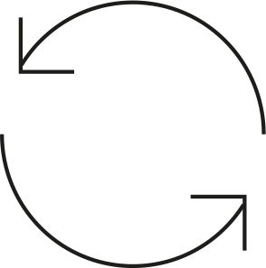

<ng-container *ngIf="{
	posts: wordpressService.posts$ | async,
	apiready: sketchfabService.apiready$ | async,
	postMetaFields: wordpressService.postMetaFields$ | async,
	viewersReady: viewersReady$ | async,
	lightStates: sketchfabService.lightStates$ | async,
	allLoaded: allLoaded$ | async,
	selectedSketchfabService: selectedSketchfabService$ | async,
	annotationDescription: annotationDescription$ | async,
	annotationTitle: annotationTitle$ | async,
	selectedLanguage: selectedLanguage$ | async,
	helpInfoHeading: helpInfoHeading$ | async,
	helpInfoText: helpInfoText$ | async
} as source">
	<div *ngIf="source.posts">

		<div class="loading-models" *ngIf="!source.allLoaded">
			{{source.viewersReady}}
		</div>

		<div class="viewer" id="viewer">
			<ul #iframeContainer >
				<li *ngFor="let post of source.posts; let i = index" class="wp-post" >
					<div class="sketchfab-embed-wrapper">
						<ng-container *ngIf="{textureQuality: source.selectedSketchfabService?.textureQuality$ | async} as source3">
							<div *ngIf="source.allLoaded && source3.textureQuality == 'LD' && source.selectedSketchfabService!.modelIndex === i" class="spinner"></div>
							<iframe #viewerRef src="" frameborder="0" allowfullscreen="" mozallowfullscreen="true"></iframe>
						</ng-container>
					</div>
				</li>
			</ul>
		</div>


		<ul class="menu-nav" *ngIf="source.selectedSketchfabService && source.selectedLanguage">
			<li *ngFor="let post of source.posts; let i = index"  >
				<ng-container *ngIf="{sketchfabServiceNext: sketchfabServices$[i] | async} as source2">
					Texture quality: {{source2.sketchfabServiceNext?.textureQuality$ | async}}
					
				</ng-container>
			</li>
			<li>
				
			</li>
			<li class="menu-nav__infoButton">
				<div class="menu-nav__label" (click)="showAnnotationBlock(annotationBlockIsVisible, source.selectedSketchfabService, source.selectedLanguage)">i</div>
			</li>
			<li class="menu-nav__infoButton">
				<div class="menu-nav__label" (click)="showInfoBlock(infoBlockIsVisible, source.selectedSketchfabService, source.selectedLanguage)">?</div>
			</li>
		</ul>

		<div *ngIf="annotationBlockIsVisible && source.selectedSketchfabService && source.annotationTitle && source.annotationDescription && source.selectedLanguage" class="info-block">
			<h2>{{source.annotationTitle}}</h2>
			<p>
				{{source.annotationDescription}}
			</p>
			<span (click)="previousAnnotation(
				source.selectedSketchfabService,
				source.selectedLanguage)">
				prev
			</span>

			<span (click)="showAnnotationBlock(annotationBlockIsVisible, source.selectedSketchfabService, source.selectedLanguage)">
				x
			</span>

			<span (click)="nextAnnotation(
				source.selectedSketchfabService,
				source.selectedLanguage)">
				next
			</span>

			<div>
				<span (click)="toggleLanguage(source.selectedSketchfabService.annotations[selectedAnnotation].swedish, 'swedish', selectedAnnotation)">Svenska/</span>
				<span (click)="toggleLanguage(source.selectedSketchfabService.annotations[selectedAnnotation].english, 'english', selectedAnnotation)">Engelska</span>
			</div>
		</div>

		<div *ngIf="infoBlockIsVisible" class="info-block">
			<h2>{{source.helpInfoHeading}}</h2>
		</div>

		<app-menu></app-menu>

		<app-annotation-nav></app-annotation-nav>
	</div>
</ng-container>
